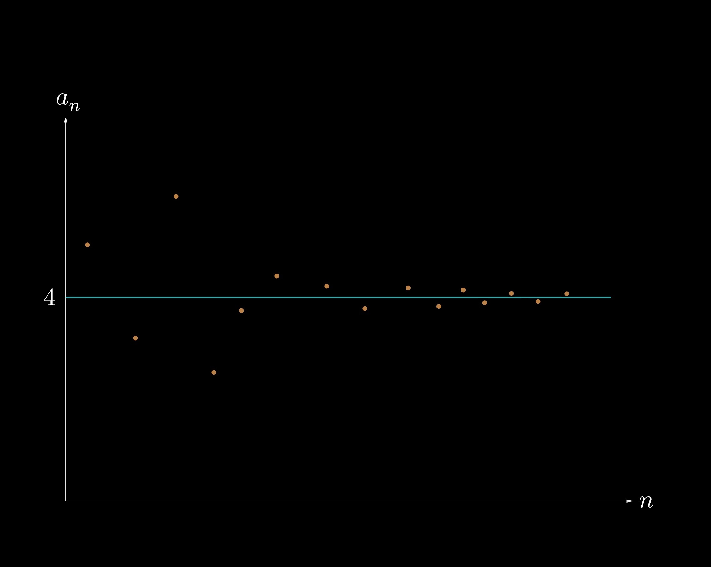
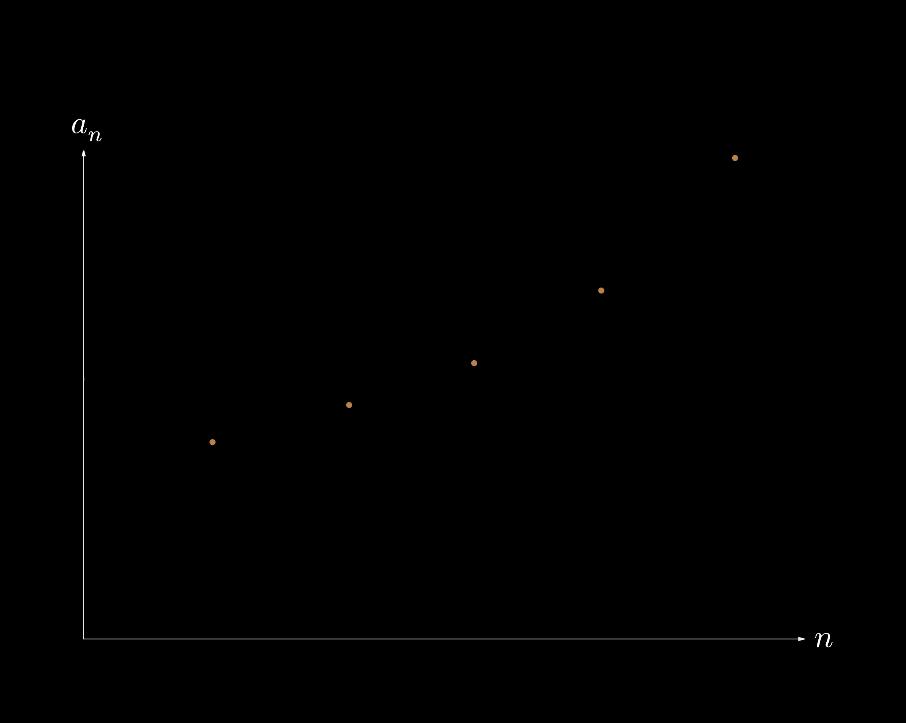
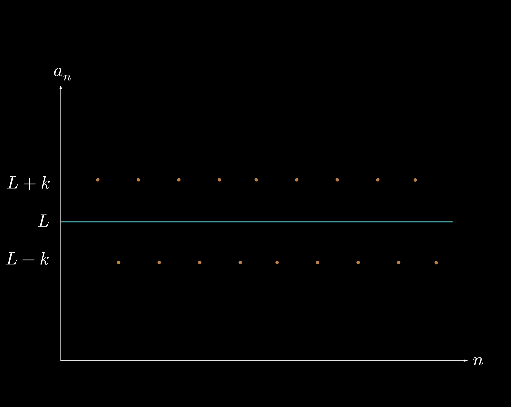

10.1 — Overview of Infinite Sequences and Series
In this section, we will introduce infinite series and sequences, and we will define convergence and divergence. A sequence is a list of numbers, while a series is a sum of numbers. An example of a sequence is $$ \{a_1, a_2, a_3, a_4, \dots a_k\}, $$ which we can model as \(\displaystyle \{a_n\}_1^k \) to represent a sequence \(a_n\) starting at \(n = 1\) and ending at \(n = k\). In calculus, we will focus on infinite sequences—sequences that never terminate. A series, however, is the sum of a sequence; i.e., consider $$ a_1 + a_2 + a_3 + a_4 + \cdots a_k, $$ which can be written using summation notation as \(\displaystyle \sum_{n = 1}^{k} a_n\). It is important to note that we may pick our starting index to be any integer greater than or equal to \(0\) (sequences and series do not have to just start at \(1\).)
Find the general term \(a_n\) that models the sequence \(\displaystyle \{2, 5, 8, 11, \dots \} \).
For this problem, we notice that the first term is \(2\), the second term is \(5\), and the third term is \(8\). We notice that each incremental term increases by \(3\), so, starting at \(n = 1\), the general form is given by \(\displaystyle a_n = \bbox[border: 2px solid white, 2pt]{2 + 3(n - 1).}\) Alternatively, if we chose to start at \(n = 0\), then \(\displaystyle a_n = \bbox[border: 2px solid white, 2pt]{2 + 3n.}\)
Let us now define the concepts of convergence and divergence. If the terms of a sequence \(\{a_n\}\) approach a certain finite value \(L\); i.e., if \(\displaystyle \lim_{n \to \infty} a_n = L\), then \(\{a_n\}\) converges to \(L\). However, if the limit does not exist, then \(\{a_n\}\) is divergent (it does not approach a finite value.)
For example, the sequence in Example 1, \(a_n = 2 + 3(n - 1)\), diverges because \(\displaystyle \lim_{n \to \infty} a_n\) approaches infinity. This result is intuitive because we can see that, as we write out more terms, the terms will continuously increase, approaching infinity. Consider, in contrast, a sequence such as \(\displaystyle a_n = \frac{1}{n}\). The terms of this sequence (starting at \(n = 1\)), are given by \(\displaystyle \left\{1, \frac{1}{2}, \frac{1}{3}, \frac{1}{4}, \dots \right\} \). It is clear that the terms in this sequence approach \(0\), a finite value. Thus, this sequence converges to \(0\).
Consider Fig. 10-1.1, in which a convergent sequence \( \{a_n\} \) is shown. We see that the sequence converges to a value \(L\), as the terms of \( \{a_n\} \) tend to the value \(L\). We can verify that \(\displaystyle \lim_{n \to \infty} a_n = L \). 
Fig. 10-1.1.
Now consider Fig. 10-1.2, in which a divergent sequence \( \{a_n\} \) is shown. We see that the terms of \(\{a_n\}\) will grow to infinity and is therefore divergent. We may verify this result because \(\displaystyle \lim_{n \to \infty} a_n = \infty \) (does not exist). 
Fig. 10-1.2.
The last scenario of divergence is shown in Fig. 10-1.3, in which a sequence \( \{a_n\} \) is shown. We see that the terms of \(\{a_n\}\) oscillate between the values \((L - k)\) and \((L + k)\). Specifically, \(\displaystyle \lim_{n \to \infty} a_n \) does not exist, so the sequence diverges. These oscillating sequences are typically in the form \(\displaystyle a_n = (-1)^n b_n\), where \(b_n\) is non-oscillating. 
Fig. 10-1.3.
Determine which of the following sequences converge. If a sequence converges, state the value to which it converges.
If \(\displaystyle \lim_{n \to \infty} a_n \ne 0\), then \(\displaystyle \sum a_n\) diverges.
$$\tag*{$\blacksquare$}$$This test states that if the terms of \(\{a_n\}\) are not shrinking in absolute value to \(0\), then \(\sum a_n\) diverges without question. However, it is important to know that this test CANNOT establish convergence; i.e., if \(\displaystyle \lim_{n \to \infty} a_n = 0\), then the test is inconclusive—we must therefore use other methods to determine whether \(\sum a_n\) converges or diverges.
Consider, as an example, the series \(\displaystyle \sum_{n = 1}^{\infty} \frac{1}{n}\), which is called the harmonic series. Writing some of its terms, we get $$ 1 + \frac{1}{2} + \frac{1}{3} + \frac{1}{4} + \cdots, $$ and this series happens to diverge! This result is non-intuitive, and it demonstrates a case in which \(\displaystyle \lim_{n \to \infty} a_n = 0\) but \(\displaystyle \sum a_n\) diverges.
Using the divergence test, determine which of the following series diverge.
We now have an idea of what we will work with in this chapter. The first half of this chapter will focus on methods for determining whether a series converges or diverges. In the second half, we will apply those methods to power series—infinite polynomials that can represent various functions such as \(\sin(x)\), \(\cos(x)\), and \(e^x\).
SECTION SUMMARY